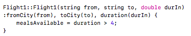
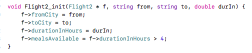

Lab 5
QA: Suppose we have a base class Animal, and a derived class Bear (which inherits publicly from Animal). We can directly access the private member variables declared in Animal while inside the Bear class.
Answer: False
QB: Having two constructors (with each taking in a different amount of arguments) inside the Baby class is an example of:
Answer: Overloading
Q1: Both classes and structs allow us to create heterogeneous compound objects.
Answer: True
Q2: Stuff in structs is by default _________ whereas stuff in classes is by default _________.
Answer: public, private
Q3: A constructor is executed automatically whenever a class-type object is created.
Answer: True
Q4: Which of the following are goals in the design of an Abstract Data Type (ADT)?
Answer: Separation of interface from implementation, Enforcing representation invariants
Q5: How would the getFromCity() function look outside of the class declaration?
Answer: string Flight::getFromCity() const { return fromCity; }
Q6: Implement the Flight1 constructor as it would appear outside of the class declaration. Assume that the meals are served on a plane if the flight is longer than 4 hours long. You MUST use a member initializer list where possible. Upload a screenshot of your solution.
Answer:

Q7: Fill in just the blanks.
Answer:
void Flight2_init( Flight2 *f , string from , string to , double durIn );
Q8: Implement the Flight_init function. Assume that the meals are served on a plane if the flight is longer than 4 hours long. Upload a screenshot of your solution.
Answer:

Q9: Lastly, for one hundred dollars: Where did Dunder meet Mifflin?
Answer: a tour of Dartmouth College!